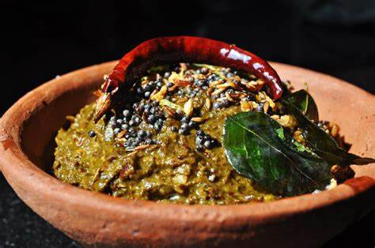

Gongura Pachadi
Ingredients: Gongura leaves (sorrel leaves), green chilies, garlic, cumin seeds, mustard seeds, fenugreek seeds, oil, salt.
Instructions: Fry gongura leaves until wilted.
Roast green chilies, garlic, cumin seeds, mustard seeds, and fenugreek seeds.
Grind all ingredients together to form a thick paste.
Season with salt and serve with rice.
Pesarattu

Ingredients: Green gram (moong dal), rice, green chilies, ginger, cumin seeds, onions, oil, salt.
Instructions: Soak green gram and rice overnight.
Grind into a smooth batter with green chilies, ginger, and cumin seeds.
Spread the batter on a hot griddle to form thin pancakes.
Sprinkle chopped onions on top.
Cook until golden brown and serve with chutney.